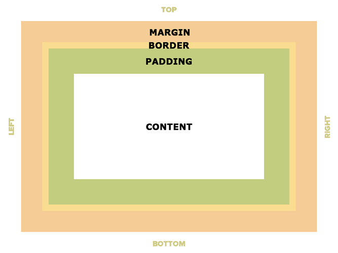

File Paths
Applies to all types of file references, including links to CSS files, image sources, and background images.
| File Path | What it means |
|---|---|
| pointB.css | pointB.css is located in the current folder |
| css/pointB.css |
pointB.css is located in a folder called css The css folder is located in the current folder |
| css/other/pointB.css | pointB.css is located in a folder called other that is located in a folder called css that is located in the current folder |
| ../pointB.css | pointB.css is located in a folder one level up from the current folder |
| ../../pointB.css | pointB.css is located in a folder two levels up from the current folder |
Connecting CSS to HTML
- External (Recommended): Within the <head /> element of an HTML file, use the following to link to a CSS file:
<link rel="stylesheet" href="file-path-here.css" /> - Inline: In the HTML file, within an element's opening tag, a style="" attribute contains CSS for that element.
- Embedded: In the HTML file, CSS is placed within the <head /> in a <style /> element.
Inline Elements
selector {
display: inline;
}
- Cannot have a set width and height
- Allow other elements to their left and right
- Don't force sibling elements to move to a new line
- Respect left and right margins
- Do not respect top and bottom margins
Examples: <span />, <em />, <strong />,
<a />, <img />
CSS Box Model

- Padding is the same background color as the content and acts as the padding inside of an element
- Border is the edge around the box, specified as "thickness, style, color"
- Margin is the transparent area around the box that separates it from other elements
Property: width
selector {
width: 300px;
}
Property: height
selector {
height: 100px;
}
Centering Block Elements
Set a width on a block element, then use auto as a margin.
selector {
width: 300px;
margin: auto;
}
Block Elements
selector {
display: block;
}
- Can have a set width and height
- Don't allow other elements to their left and right
- Force sibling elements to move to a new line
- Respect left and right margins
- Respect top and bottom margins
Examples: <div />, <section />, <p />, <h1 />, <h2 />, <h3 />, <h4 />, <h5 />, <h6 />, and almost everything else
Padding and Margin
Both padding and margin use the same syntax. Substitute 'margin' for 'padding' to apply margins instead.
One value:
selector {
padding: all;
}
Two values:
selector {
padding: topAndBottom leftAndRight;
}
Four values:
selector {
padding: top right bottom left;
}

Can also specify padding-top, padding-right, padding-bottom, or padding-left to apply padding to individual sides.
Border
selector {
border: thickness style color;
}
Can also specify border-top, border-right, border-bottom, or border-left to apply a border to individual sides.